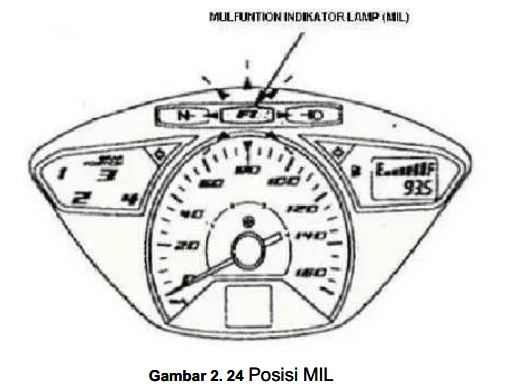
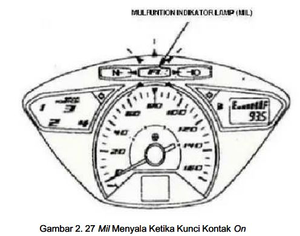
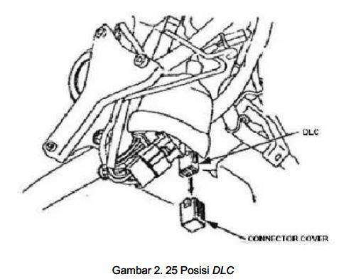
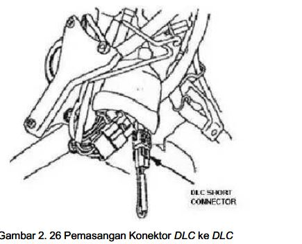
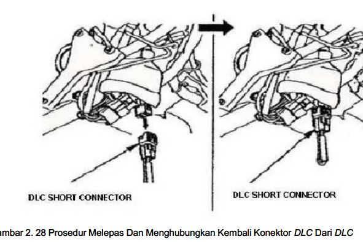

Sistem Diagnosa EFI / PGM-FI
ECU mendeteksi malfungsi dan kelainan pada jaringan sensor, kemudian menyalakan lampu peringatan mesin (check engine/MIL) dan mencatat gangguan yang terjadi. Modul juga membahas fungsi darurat (Fail Safe) ketika terjadi malfungsi sensor. fileciteturn5file0L16-L27
Alur Pemeriksaan Diagnosis
📷 Posisi MIL

🎬 Video Prosedur Diagnosis MIL
Video praktik untuk melihat prosedur pemeriksaan dan pembacaan kedipan Malfunction Indicator Lamp (MIL).
Simulasi Kedipan MIL
Pilih kode dari materi, lalu jalankan simulasi. Untuk kode dua digit seperti 12, modul menjelaskan bahwa satu kedipan panjang = 10 dan dua kedipan pendek = 2. fileciteturn5file0L70-L76
Kode DTC yang disebut dalam modul
| Kode/pola | Indikasi |
|---|---|
| 1 | Rangkaian MAP sensor |
| 1, 8, 9 | Rangkaian suplai (daya) atau massa sensor unit |
| 7 | Engine Oil Temperature (EOT) sensor |
| 12 | Rangkaian injektor |
| 33 | ECU/ECM |
| 54 | Bank Angle Sensor |
| MIL hidup terus | Gangguan data link atau rangkaian MIL |
Sumber: uraian kode kegagalan pada modul Materi 4. fileciteturn5file0L80-L86 fileciteturn5file0L96-L105
Prosedur Pendiagnosaan Sendiri



Prosedur Me-Reset Pendiagnosaan Sendiri
📷 Prosedur Reset ECU

🎬 Video Prosedur Reset ECU
Video praktik untuk memperjelas langkah reset pendiagnosaan sendiri ECU/PGM-FI.
Gunakan kontrol ⛶ pada pemutar video untuk layar penuh.
Galeri Gambar Materi 4
Gambar berikut menggunakan file yang Bapak lampirkan. Klik gambar untuk memperbesar.